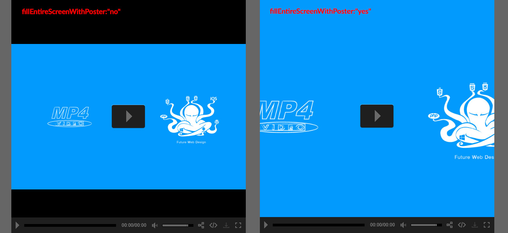

“Easy Video Player ” Documentation by FWDesign
“Easy Video Player”
Created: 10/01/2018 - Version 6.1
By:© FWD (FLASH WEB DESIGN)
Email: contact@webdesign-flash.ro
Thank you for purchasing our script. If you have any questions that are beyond the scope of this help file, please feel free to email via our email. Thanks so much!
Table of Contents
- Important notes read this before anything else.
- Install Easy Video Player into your html page.
- Setup video / audio and poster source.
- Setup ads (pre-roll, mid-roll, post-roll)/ advertisement video.
- Setup cuepoints
- Constructor parameters.
- Setup subtitles.
- Setup pop-up commercial ads.
- Setup annotations.
- Setup private videos.
- Encrypt video path.
- Setup advertisement on pause window.
- API.
- Sources and Credits
A) Important notes make sure you read this! - top
Please note that the Easy Video Player installation and configuration is not complicated but because it has a lot of customizable settings it might seem complicated, please go through the entire documentation before trying to install it into your own page. Basically what it must be done is to copy some html code from the examples we provided and paste it into your own html page and of course add your own video file.
Easy Video Player only requires the mp4 video format and it will work in all browsers on a desktop machine or on a mobile device, this is extremely important because there is no need to create multiple video formats for browsers that dose not support mp4, also please note that the mp4 video format is recommended and used by all major browsers distributors like Google, Microsoft, Apple, Mozzila etc.!
The server is character case sensitive so make sure that the Easy Video Player settings are identical to those from the provided examples.
When using mp4 video files located on your server with relative paths you must add all folders that contains mp4's videos in the content folder, this is extremely important in order for all features to work correctly.
It is important to understand that the more video instances are used the browser will be more stressed and problems may occur specially on mobile. If you think at all popular video websites like youtube or video they are only using a single video instance and this is done because of performance issues... Try to keep the Easy Video Player instances to a maximum of six instances if possible even less, this will help the browser to perform great. This recommendation applies to all video players available on the web including youtube or vimeo!
When testing local on IE7/IE8 or on an older browser that dose not support HTML5 video it will not work because the flash (.swf) file is trying to communicate with the browser and this is not allowed, of course it will work fine when tested online.
Some of the features will not work local like the share button or playing youtube videos on some browsers like IE and Opera, or like playng vimeo videos, this is normal behavior because most browser does not allow this, once uploaded on the server it will function properly.
If you don't need to use youtube set useYoutube:"no" the same applies if you don't want to use Vimeo set useVimeo:"no", this is important because it will not createa the Vimeo or Youtube instances this will improve overall performance.
When something is wrong with a Easy Video Player actions a info box with the problem description will appear over the Easy Video Player, please note that this box is there to help you understand the problem, for example if a mp4 video file is not found the box will appear and inform you about the problem. The box can be closed when clicked or touched.
The Easy Video Player skin is constructed from .png images, only a few settings for changing colors are possible like changing the time color. If you want a different skin the .png files must be modified. The skin is really flexible this is allowing to skin the Easy Video Player as you like. We have a great designer in our team so if you need a custom skin please contact us!
To use EVP as a video a video background for your website set displayType:"backgroundVideo" .
B) Install Easy Video Player into your html page. - top
EVP has multiple display types (fluid width, responsive, fixed, fullscreen, after parent), each display type is explained in detail below.
Responsive installation
In the download files there is a start folder and in this folder there are html files starting with the label "responsive", each of this examples have exactly the same structure with different constructor settings. You can use one of them to copy and paste the required html code based on skin that you need, I will use the responsive-skin-minimal-dark.html as an example for this tutorial.
The skin is created using javascript and .png images, if you want a custom skin please contact us. If you want to create a skin of your own modify the ones we already provided.
- Copy and paste the content folder and the java folder into the same folder with your .html file, inside the content folder there are other folders which are self explanatory. Keep only the skin folders that you need to save space on the server.
- Open responsive-skin-minimal-dark.html with a text editor.
- The javascript file must be imported, in the head section of your html file add the code from the below image.
This is how the player is installed in a HTML page, please read the Constructor parameters section to understand the Easy Video Player properties
Fullscreen and popup installation. - top
To install the EVP player in fullscreen the exact same steps as in the Responsive installation must be followed, the only difference is that the displyType property must be set to fullscreen as follows : displyType:"fullscreen". Inside the start folder there are html files examples for each skins, this examples are starting with the label "fullscreen".
To popup the EVP there is a POPUP-example.html example includded in the start file. Please check out the source to see how this is accomplished.
Atter parent installation
This display type is resizing EVP width and height to fill the available parent div width and height, this is really useful if you have a responsive div and you want EVP to resize based on it's size. To use this display type follow the same installation steps from Responsive installation section, the only difference is the displayType property which must be set to afterParent like this displayType:afterParent. In the start folder there is a html file called AFTER-PARENT.html, you can use it as reference.
C) Setup video / audio and poster source. - top
evp can play mp4 videos from your server, a different server youtube or vimeo. If you are using relative source paths for your videos make sure that all of them are situated inside the content folder, this is really important in order for the player to function correctly,
To play a video from your server set the videoSource property to point to the mp4 video path, relative or absolute paths can be used, also evp can be set to play, multiple video sources. This is ilustrated below.
//multiple sources
videoSource:[
{source:"content/videos/fwd-480p.mp4", label:"small version"},
{source:"content/videos/fwd-720p.mp4", label:"hd720"},
{source:"content/videos/fwd-1080p.mp4", label:"hd1080"}
],
//single source
videoSource:[
{source:"content/videos/fwd-1080p.mp4", label:"hd1080"}
],
To add a poster for the video set posterPath to point to the poster image (jpg, jpeg, png), please note that an optional source for mobile devices can be added seprated by ",". Example below:
posterPath:"content/posters/mp4-poster.jpg, content/posters/mp4-poster-mobile.jpg",
To play a HLS / m3u8 video file set the videoSource property to point to HLS / m3u8 video URL, this is illustrated below.
videoSource:[
{source:"http://184.72.239.149/vod/smil:BigBuckBunny.smil/playlist.m3u8", label:""}
],
To play a video from youtube set the videoSource property to point to youtube video URL, this is illustrated below.
videoSource:[
{source:"https://www.youtube.com/watch?v=5wAHG-tPgc0"}
],
To play a video from vimeo set the videoSource property to point to vimeo video URL, this is illustrated below.
videoSource:[
{source:"https://vimeo.com/187418097"}
],
To play a mp3 file set the videoSource property to point to the mp3 file relative or absolute path, this is illustrated below.
videoSource:[
{source:"content/audio/1.mp3"}
],
To play a 360 degree / VR video set the videoSource property to point to video video URL and there is an extra parameter named videoType that has to be set to 360DegreeVideo, this will enable this feature for the current video as illustrated below.
videoSource:[
{source:"content/videos/360.mp4", label:"", videoType:"360DegreeVideo"}
],
To play a green screen video set the videoSource property to point to video video URL and there is an extra parameter named videoType that has to be set to greenScreenVideo, this will enable this feature for the current video as illustrated below. In the start file there is a HTML file called GREENSCREEN-example.html, you can use it as reference. Please note that this feature will only work when tested online on a http protocol it will not work local, locally only the audio is playing, also the mp4 video has to be from the same domain with the domain on which the video player is running.
videoSource:[
{source:"content/videos/zombie.mp4", label:"", videoType:"greenscreenvideo"}
],
To play a mp3 or mp4 file from google drive set the videoSource property to point to the mp3 / mp4 google frive video source, this is explained in the tutorial below.
videoSource:[
{source:"content/audio/1.mp3"}
],
Method 1:
Go to Disc – My drive.
Right click on get shareable link the like on screenshot: get video id 1 get video id 2 and use that video ID to create google drive video URL.
This is final URL how google drive video URL should look:https://drive.google.com/uc?export=download&id=videoID
Replace videoID with the id taken from the previous step and use it as the video source:https://drive.google.com/uc?export=download&id=0B4Au_agYmWFZQWdHdHN3OVJLX0E
Method 2 for larger google drive video files:
Go to Disc – My drive.
Right click on get shareable link the like on screenshot: get video id 1 get video id 2
Copy that URL of the video directly into browser then search for the video src, please see get video src.
Right click on video -> inspect element -> find div with class ‘drive-viewer-video-player’ -> open up iframe -> document -> html -> body -> player -> html5-video-player -> and you will see a <video> tags with the ‘src’ of the video, you need copy/paste that ‘src’ into the player options.
Use the mp4 or mp3 src as the the video source.
Method 3:
Go to Disc – My drive.
Right click on get shareable link the like on screenshot: get video id 1 get video id 2 and use that video ID to create google drive video URL.
This is how the final URL should look: http://api.getlinkdrive.com/getlink?url=https://drive.google.com/file/d/GOOGLE_DRIVE_VIDEO_ID/view where GOOGLE_DRIVE_VIDEO_ID represents the video id taken for the shareable link
Once open the link will answer with a JSON, use the JSON value of the url paramaeter as the video source.
E) Setup video couepoints. - top
To add quepoints to a video the cuepoints parameter has to be set to an array of quepoints like showed below. Inside it there are the cuepoints, you can add as many as you like by stacking them one after eachother. Each object contains the quepoints data as follows :
timeStart: - the time in format "hours:minutes:seconds" at which the cuepoint will execute the javascript code, for example to execute the quepoint code at second 10 into the video playe set this option to 00:00:10.
javascriptCall: - a function name for example myFunction() or a javascript snipet code like alert('cuepoint at time 00:00:10'), this will be executed at quepoint time start.
cuepoints:[
{timeStart:"00:00:10", javascriptCall:"alert('cuepoint at time 00:00:10')"},
{timeStart:"00:00:30", javascriptCall:"alert('cuepoint at time 00:00:30')"}
]
D) Setup ads (pre-roll, mid-roll, post-roll)/ advertisement video. - top
First of all to add ads to a video the adsSource parameter has to be set an array of ads like showed below. Inside it there are the ads, you can add as many as you like by stacking them one after each other. Each object contains the ads data as follows :
source - the ad source, it can be a mp4 video path, an image path, webpage URL or a youtube video url.
timeStart - the ad start time when it will appear in hours:minutes:seconds format.
timeToHoldAds - the ad time until the skip button will appear in hours:minutes:seconds format.
thumbnailSource - optional tumbnail source that will appear as a small preview in the skip button.
link - the link to open when the ad is clicked.
target - the link target (_blank or _self).
addDuration - this is optional if the ad is an image or a webpage(iframe) and it represents the time to hold the image or webpage(iframe) ad in in hours:minutes:seconds format.
adsSource:[
{source:"https://www.cinemagia.ro/filme-2017/", timeStart:"00:00:20", addDuration:"00:00:60", timeToHoldAds:4, thumbnailSource:"content/images/thumbnail.jpg", target:"_blank"},
{source:"content/videos/ad.mp4", timeStart:"00:00:20", timeToHoldAds:4, thumbnailSource:"content/images/thumbnail.jpg", link:"http://www.webdesign-flash.ro", target:"_blank"},
{source:"https://www.youtube.com/watch?v=Bv09DRd4lsM", timeStart:"00:00:40", timeToHoldAds:4, thumbnailSource:"content/images/thumbnail.jpg", link:"http://www.google.ro", target:"_blank"},
{source:"content/images/ad.jpg", timeStart:"00:00:55", addDuration:"00:00:20", timeToHoldAds:4, thumbnailSource:"content/images/thumbnail.jpg", link:"http://www.webdesign-flash.ro/p/evp/content/images/ad.jpg", target:"_blank"}
]
F) Constructor parameters. - top
Please open any of the .html files provided with a text editor as reference.
These parameters represents the possible setting for the Easy Video Player they are all visible in the below image and described below.
//-- global settings --//
- FWDEVPlayer.videoStartBehaviour:"pause" - this can be stop, pause or none. If set to pause and more then one instance is used all instances will pause except the current playing instance otherwise if set to stop all instances will stop playing and stop the download precess except the current playing instance. If none is used when playing one instance will not stop or pause other instances.
//-- main settings --//
- useYoutube:"yes" - This can be yes or no. If you don't use youtube set it to no.
- useVimeo:"yes" - This can be yes or no. If you don't use vimeo set it to no.
- instanceName:"player1" - The player instance name, trough this instance the API is called for example if the instance name is "player1" and if you want to call play of this instance it is called like this player1.play();. Please note that the instance name must be unique for each instance.
- parentId:"myDiv" - The id of the div into which the Easy Video Player is added, this id must be unique for each instance.
- skinPath:"content/minimal_skin_dark" - The skin path, the folder that contains the skin graphics.
- mainFolderPath:"content" - The main folder path. This folder contains some important files like the php files and the mp4 vodeo files, in this folder you need to add your mp4 video folders or mpp video files.
- skinPath:"minimal_skin_dark" - The skin folder path, the path for the skin that you want to use.
- displayType:"responsive" - This can be responsive, afterParent, backgroundVideo or fullscreen, if you want to embed the player in your page inside the div then set this to responsive, if you want the player to always fill the browser window width and height set it to fullscreen, if you want the player inside a div and to have the player resizing based on that div widht and height set this feature to afterParent.
- autoScale:"yes" - this can be yes or no.If set to yes the EVP height will always be proportional to the EVP width, if set to no the height will be fixed based on the maxHeight property.
- greenScreenTolerance:"200" - a number from 0 to 256 that repreents fine tunning for removing the green pixles from the video background, by default is 200, modify this valye only if necessary.
- fillEntireVideoScreen:"yes" - this can be yes or no. If set to yes the EVP will fill the video screen with the entire video otherwise it will resize the video normal, you can see an example at this link http://www.webdesign-flash.ro/p/evp/background.html .
- openDownloadLinkOnMobile:"no" - Set this option to yes if you want to open the video in a new window on mobile devices when the download button is clicked.
- useHEXColorsForSkin:"no" - this can be yes or no, if this is set to yes EVP will use the canvas element to redraw the buttons and apply the specified color, the cool thing about this feature is that it will retain the buttons texture and at the same time apply the color, behind the hood this feature will change the white colors 100% , dark color 0% and everything else in between, is more complicated that it seam just know that it works, you can see an example at this link http://www.webdesign-flash.ro/p/evp/hex.html .
- normalHEXButtonsColor:"#FF0000" - the normal color applied to the skin buttons and elements if the useHEXColorsForSkin feature is enabled / set to useHEXColorsForSkin:"yes" .
- selectedHEXButtonsColor:"#FFFFFF" - the selected color applied to the skin buttons and elements if the useHEXColorsForSkin feature is enabled / set to useHEXColorsForSkin:"yes" .
- videoSourcePath:videoSource:[ {source:"content/videos/fwd-480p.mp4", label:"small version"}, {source:"content/videos/fwd-720p.mp4", label:"hd720"}, {source:"content/videos/fwd-1080p.mp4", label:"hd1080"} ], - The videos sources, you can add or more video sources as you can see in this example. Please read the Setup video and poster source.
- posterPath:"content/posters/mp4-poster.jpg" - The video poster source path, if you don't need a poster set this option to "none". Please read the Setup video and poster source.
- showErrorInfo:"yes" - Set this to no if you don't want the error / info window message to appear, please note that if this is disabled there is no way to tell if an error might happen.
- fillEntireScreenWithPoster:"no" - By default the poster is set to be completely viewed, if you want it to fill the entire player screen set this option to yes. Example in the image below.
- disableDoubleClickFullscreen:"no" - Set this to no if you don't want the player to go full screen on double click on PC or double tap on mobile devices.
- rightClickContextMenu:"developer" - The right click contect menu. By default is developer which means that a link to the FWD wesbiste will appear (please leave this active if possible this way you can help us with our work), none means that it will disable the right click context menu and default will have the default behavior. 
- showContextMenu:"yes" - this can be yes or no. Enable or disable the "Made by FWD" right click context menu. We would appreciate if you can leave this option set to yes.
- addKeyboardSupport:"yes" - this can be yes or no. Enable or disable the keyboard space bar to pause or play the video.
- autoPlay:"yes" - this can be yes or no.
- scrubAtTimeAtFirstPlay:"00:00:00" - this can be set to scrub at a specified time when the video starts to play the first time.
- loop:"no" - this can be yes or no.
- maxWidth:750 - a number that represents the player maximum width in pixels, think of this property as it would be the max-width css property (only applies if the displayType is responsive).
- maxHeight:750 - a number that represents the player maximum height in pixels, think of this property as it would be the max-height css property (only applies if the displayType is responsive).
- volume:.8 - A number from 0.1 to 1 that represents the volume level.
- backgroundColor:"#000000" - the main background color.
- posterBackgroundColor:"#000000" - The video poster background color, if you want a transparent background set this to transparent.
- showLogo:"yes" - This can be yes or no, hides or show the logo.
- hideLogoWithController:"yes" - This can be yes or no. If is set to yes the logo will hide when the controller hides otherwise it will always be visible over the video.
- logoLink:"http://www.yourlink.com" - The page link that will open when the logo is clicked, the none value will disable this feature.
- logoPosition:"topRight" - This can be topRight, topLeft, bottomRight, bottomLeft, used to position the logo in one of the video corners.
- logoMargins:"20" - Margins in px to push the logo from the video corners.
- showControllerWhenVideoIsStopped:"yes" - this can be yes or no, if this is set to yes the control bar is showed when the video is stopped and the video poster is visible otherwise it the control bar is hidden until the video starts to play.
- showVolumeScrubber:"yes" - this can be yes or no. Hide or show the volume scrubber.
- showVolumeButton:"yes" - this can be yes or no. Hide or show the volume button.
- showTime:"yes" - this can be yes or no. Hide or show the video current and total time indicator.
- showYoutubeQualityButton:"yes" - this can be yes or no. Hide or show the youtube quality button (this only applies if the video is played from youtube).
- showShareButton:"yes" - this can be yes or no. Hide or show the share window button.
- showFullScreenButton:"yes" - this can be yes or no. Hide or show the fullscreen button.
- repeatBackground:"yes" - this can be yes or no. Repeat or not the control bar background.
- controllerHeight:70 - the controller height in pixels.
- controllerHideDelay:2 - a number that represents the seconds until the control bar is hiding after a period of inactivity.
- startSpaceBetweenButtons:10 - a number that represents the space between buttons in pixels, illustrated below with the red arrows.
- spaceBetweenButtons:10 - a number that represents the space between buttons in pixels, illustrated below with the red arrows.
- mainScrubberOffestTop:14 - the amount in pixels to push the main scrubber up when the controller is hiding.
- scrubbersOffsetWidth:10 - a number that represents the total amount in pixels removed from the scrubber bars progress line when they are at the end (change number to understand it better, useful based on the skin type).
- timeOffsetLeftWidth:10 - a number that represents the an addition in px to the space between the time indicator left side and the scrubber.
- timeOffsetLeftWidth:10 - a number that represents the an addition in px to the space between the time indicator left side and the scrubber.
- timeOffsetRightWidth:10 - a number that represents the an addition in px to the space between the time indicator right side and the volume button or any other button that will follow the time indicator.
- volumeScrubberWidth:70 - the width of the volume srubbar.
- volumeScrubberOffsetRightWidth:10 - a number that represents the an addition in px to the space between the volume scrubbar right side and the facebook share button or any other button that will follow the volume scrubbar.
- timeColor:"#888888" - the video time indicator color.
- youtubeQualityButtonNormalColor:"#888888" - the youtube quality buttons text normal color.
- youtubeQualityButtonSelectedColor:"#FFFFFF" - the youtube quality buttons text selected / hover color.


- audioVisualizerLinesColor:"#0099FF" - The color of the audio visualiser bars.
- audioVisualizerCircleColor:"#FFFFFF" - The color of the audio visualiser center circle.
- showPlaybackRateButton:"yes" - This can be yes or no. Enable or disable the playback rate button.
- defaultPlaybackRate:"1" - This playback rate speed. This can be 0.25, 0.5, 1, 1.25, 1.5, 2.
- isLoggedIn:"no" - Set this to yes if the user is loggedin, of course you will have to set the value of this parameter based on your website/project.
- playVideoOnlyWhenLoggedIn:"yes" - Set this to yes to allow only a loggedin user to play the video.
- loggedInMessage:"Please login to view this video" - Message to show to users that are not logged it.
- embedWindowCloseButtonMargins:0 - Margins for the next, previous and close buttons.
- borderColor:"#333333" - the border color of the main windows.
- mainLabelsColor:"#FFFFFF" - the color for the main labels.
- secondaryLabelsColor:"#a1a1a1" - the color for the secondary labels.
- shareAndEmbedTextColor:"#5a5a5a" - the color for the share and embed text.
- inputBackgroundColor:"#000000" - the background color for the input texts.
- inputColor:"#000000" - the color for the input texts.
 //advertisement on pause window
//advertisement on pause window
- aopwTitle:"Advertisement" - The pause ad window title.
- aopwSource:""- The pause ad window source, this has to be a link to a page that will show up in the window, for example http://www.webdesign-flash.ro/iframe.html , the page can contain anything.
- aopwWidth:400- The pause ad window maximum width.
- aopwWidth:240- The pause ad window maximum height.
- aopwBorderSize:4- The pause ad window border height in px.
- aopwTitleColor:"#FFFFFF"- The pause ad window title color.
- subtitlePath:"" - The subtitle path. If you don't need a subtitle leave it blank.
- showSubtitleByDefault:"yes"- This can be yes or no. Shows the subtitles by default.
- openNewPageAtTheEndOfTheAds:"no" - If this is set to yes when the ad video has finished to play a new web page will open with the url specified with the adsVideoSourcePath property.
- adsVideoSourcePath:"none"- If you don't want an ads video set this to none, otherwise set this to the path of the ads video, please read the Setup video and poster source.
- adsButtonsPosition:"right" - this can be left or right and represents the ads info and button position over the video.
- adsPageToOpenURL:"http://www.webdesign-flash.ro" - the url of the page that will open when the ads video is clicked or when the ads video has finised to play, if you don't want to open a page set this to "none".
- adsPageToOpenTarget:"_blank" - the page to open target, it can be _self or _blank.
- adsThumbnailPath:"content/posters/thumbnail.jpg" - the thumbnail path for the skip add screen, if you don't want a thumbnail set it to "none". The thumbnail width and height should be higher then 100px.
- skipToVideoText:"You can skip to video in: " - the text that will appear in the skip info screen.
- skipToVideoButtonText:"Skip Ad " - the text that will appear in the ads skip button.
- timeToHoldAds:4 - time in seconds until the ads video can be skipped.
- adsTextNormalColor:"#777777" - the normal color for the text for both ads skip info screen and ads skip button.
- adsTextSelectedColor:"#FFFFFF" - the selected color for the text for both ads skip info screen and ads skip button.
- adsBorderNormalColor:"#444444" - the normal color for the border for both ads skip info screen and ads skip button.
- adsBorderSelectedColor:"#FFFFFF" - the selected color for the border for both ads skip info screen and ads skip button.
G) Setup subtitles. - top
EVP can load a .srt or .txt files as a subtitile file, the txt file have the same structure as the a file, for reference you can open with a text editor the subtitle_english.txt from the content folder, the structure is self explanatory. To change the subtitle style just edit the class EVPSubtitle from the global.css file.
To add one or more subtitles please see the code sample below, the code is self explanatory.
//subtitles
showSubtitleButton:"yes",
subtitlesOffLabel:"Subtitle off",
startAtSubtitle:1,
subtitlesSource:[
{subtitlePath:"content/english_subtitle.txt", subtileLabel:"English"},
{subtitlePath:"content/romanian_subtitle.txt", subtileLabel:"Romanian"},
{subtitlePath:"content/spanish_subtitle.txt", subtileLabel:"Spanish"}
],
H) Setup pop-up commercial ads. - top
To add pop-up ads window or windows can be added with ease, some code has to be added inside the video player constructor, the example below will show better what I mean by that. Below you can see the code that has to be added into the contructor, the parameters that are self explanatory, you can add one or as many as you like. Please note that only image format is supported as the popup source (.jpg, .jpeg, .png). Also I've provided a HTML example labeled POPUP-ADS.html.
//popup commercial ads
showPopupAdsCloseButton:"yes",
popupCommercialAdsSource:[
{imagePath:"content/images/img.jpg", timeStart:"00:00:01", timeEnd:"00:00:28", link:"http://www.webdesign-flash.ro", target:"_blank"},
{imagePath:"content/images/img2.jpg", timeStart:"00:00:31", timeEnd:"00:00:52", link:"http://www.webdesign-flash.ro", target:"_blank"}
],
I) Setup annotations. - top
There is an example includded in the download files called ANNOTATIONS-example.html, you can use it as reference. First of all to add annotations to a video an ul element with the structure presented below has to be added in the page. Inside it there are the annotations, you can add as many as you like by stacking them one after eachother. The li element that holds the annotation data has some attributes that consturct their logic:
data-start-time - the start time when the annotaton show in hours:minutes:seconds format.
data-end-time - the end time when the annotaton hide in hours:minutes:seconds format.
data-left - the left postion in px.
data-top - the top position in px.
data-normal-state-class - a css class that represents the annotation normal state.
data-selected-state-class - a css class that represents the annotation selected state, when the annotation is hovered this class will be applied, please note that this is optional if you don't want a selected state don't add this attribute
data-show-close-button - this can be yes or no, shows or hides the annotation close button.
data-click-source - this can contain a page URL or a javascript name ex:data-click-source="myJavascritpFunction();", this attribute is optional if you don't want to open a page or to call a javascript function on click don't add this attribute.
data-click-source-target - if you want to open a page this is this attribute holds the page target (_blank, _self).
After the annotation element is created the id of it has to be passed in the contructor annotiationsListId property like this annotiationsListId:annottaionId in this case annotiationsListId:fwdAnnotations.
To find the correct postion for the annotation in the contructor set showAnnotationsPositionTool:"yes", this will allow to drag the annotation in the position that you like and the top and left postion will be displayed this way you will know the exact postion for the annotation. Please don't forget to click the play button and scrub to see your annotation/annotations, when you see the annotation for which you want to find the postion pause the video and drag the annoation at the postion that you like, then just set data-left and data-top to the desired position. After this process is finished set showAnnotationsPositionTool:"no".
J) Setup private videos. - top
To set a video private just set the isPrivate parameter in the video source to "yes", this is showed below.
videoSource:[
{source:"content/videos/fwd-720p.mp4", label:"hd720", videoType:"normal", isPrivate:"yes"}
],
To set the video password there is a tool I have created that will encrypt the password at this link, enter your desired password in the input field then click on the Encrypt passowrd button, once this is done copy the encrypted password and paste it as a value of the privateVideoPassword parameter from the constructor. Doing this steps will configure EVP to request a password before the video can play. The default password is Melinda and there is example provided in the start folder called PRIVATE-VIDEO-example.html.
K) Encrypt video path. - top
To encrypt the video path I have created a tool that will encrypt the video path at this link, enter the video path (this applies all video / audio paths) in the input field then click on the Encrypt media button, once this is done copy the encrypted video path and paste it as the video source parameter from the contructor. There is example provided in the start folder called ENCRYPTED-VIDEO-PATH-example.html and also below there is a sample code ilustrating this. The same rule apply to the video poster.
videoSource:[
{source:"encrypt:Y29udGVudC92aWRlb3MvZndkLTEwODBwLm1wNA==", label:"hd1080"}
],
L) Setup advertisement on pause window. - top
EVP can open a advertisement window when the video is paused that will appear over the video and this window can load a webpage, the page content can be anything, to enable it just set the aopwSource value to the page link / url that you want to open in it for example aopwSource:"http://www.webdesigh-flash.ro/iframe.html".
M) API. - top
Inside the donwload files there is HTML file called API-example.html, in this file I have added all events and methods for reference, open the page source to see them. Full reference below. Please note that the properties are read only and they can only be written in the consturctor for more info about this please read the Constructor parameters section.
API - public methods:
| Function | Method | Description |
|---|---|---|
getVideoSource |
getVideoSource():String | Return the video source path if the video is from the server or youtube id if the video is playing from youtube. |
getPosterSource |
getPosterSource():String | Return the poster source. |
getCurrentTime |
getCurrentTime():String | Return the current time source. |
getTotalTime |
getTotalTime():String | Return the video total time / duration. |
goFullScreen |
goFullScreen():void | Set video player to fullscreen. |
play |
play():void | Start / play playback. |
pause |
pause():void | Pause the playback. |
setVideoSource |
setVideoSource(videoSource:String):void | Set the video source path or youtube video id. Please read the Setup video and poster source. |
setPosterSource |
setPosterSource(posterSource:String):void | Set the poster source path. Please read the Setup video and poster source. |
share |
share():void | Share current track on facebook. |
setVolume |
setVolume( Number ):void | Set the video volume, this method accepts a parameter that represents a number between 0 (video mute state) and 1 (video maximum volume). |
scrub |
scrub( Number ):void | Notify instance to scrub (set the video position), this method accepts a parameter that represents a number between 0 (video start position) and 1 (video end position). |
scrubbAtTime |
scrubbAtTime(time:String):void | Notify instance to scrub at a specified time, the time argument has to be in hours:minutes:seconds format ex:00:01:20. |
stop |
stop():void | Stops the playback and the loading process if the loading process has started. |
API - event listeners:
| Event | Prefix | Description |
|---|---|---|
error |
FWDEVPlayer.ERROR |
Dispatched when the Easy Video Player instance can't load or play the video file, this event has a property of type string that represents the error message. |
goFullScreen |
FWDEVPlayer.GO_FULLSCREEN |
Dispatched when the Easy Video Player is set to fullscreen. |
goNormalScreen |
FWDEVPlayer.GO_NORMALSCREEN |
Dispatched when the Easy Video Player is set to normalscreen. |
ready |
FWDEVPlayer.READY |
Dispatched when the Easy Video Player instance API is actually available. |
stop |
FWDEVPlayer.STOP |
Dispatched when the Easy Video Player instance is stopped. |
play |
FWDEVPlayer.PLAY |
Dispatched when the Easy Video Player instance playback start to play. |
pause |
FWDEVPlayer.PAUSE |
Dispatched when the Easy Video Player instance playback is paused. |
update |
FWDEVPlayer.UPDATE |
Dispatched when the Easy Video Player instance is playing and it's position is changing (useful to update a custom scrub bar), this event has a property of type number between 0 (video start position) and 1 (video end position). |
updateTime |
FWDEVPlayer.UPDATE_TIME |
Dispatched when the Easy Video Player instance current duration is changing. This event has two properties of type string curTime and totalTime. |
playComplete |
FWDEVPlayer.PLAY_COMPLETE |
Dispatched when the Easy Video Player instance playback has reached the end of the video file. |
N) Sources and Credits - top
This component was made by Tibi from FWD (FWDesign) FLASH WEB DESIGN, for more information and support contact us at contact@webdesign-flash.ro
Once again, thank you so much for purchasing this item. As I said at the beginning, I'd be glad to help you if you have any questions regarding this Easy Video Player and I'll do my best to assist.
FWDesign